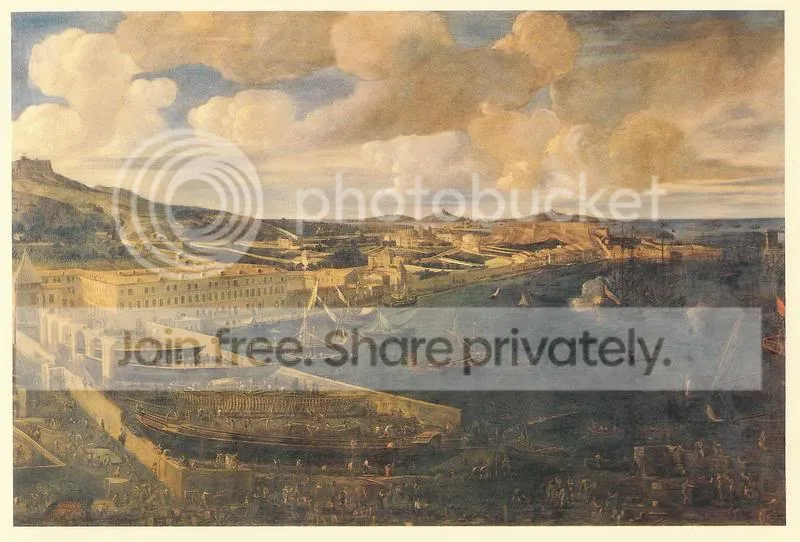

Как мы уже говорили, работы по постройке галеры за 24 часа велись в Галерном арсенале Марселя.

Работу начинали корабельные плотники. Из истории многих стран известно, что это народ ушлый и хитроватый. Недаром и у нас уважали этих работников, хотя заглаза и звали их «Рязань косопузая», намекая на их кушаки, перекошенные от тяжести вставленных за пояса топоров. И в данном случае они предусмотрительно провели заранее ряд важных операций. Во-первых, соорудили над всем стапелем навес, который не только защищал строителей и постройку от непогоды, но и позволял раскрепить на его опорах все необходимые подручные средства и первоочередные материалы. Во-вторых, заранее провели одну из самых ответственных и сложных операций – установку, сборку в замках и юстировку киля, ахтерштевня и форштевня. От точности этой операции зависела вся последующая работа, поэтому делать ее в спешке было непозволительно.
Главный производитель плотницких работ мастер д'Аш, понимая, что «кадры решают все», разбил всех плотников на десять «эскадр». Пусть нас не смущает этот термин. Его значение «бригада» появилось во французском языке раньше, чем значение «отряд кораблей». Французское слово escadre заимствовано у итальянцев, у которых слово squadra начиная с XV века означало именно «бригада», и лишь во второй половине XVI в. появилось известное нам морское значение этого слова; на первых порах французы использовали различные формы этого слова: и esquadre, и scadre, пока, наконец, не появилось escadre. Кстати, рабочие на верфях Венеции также были объединены в эскадры, так что французы просто заимствовали этот термин у более опытных венецианских галеростроителей.
В каждую эскадру входило 30 плотников, 15 сверловщиков и 6 подносчиков нагелей, нагельщиков (porteurs de clous). Видимо, люди последней профессии подносили и необходимые для работы инструменты. В «руководящий состав» каждой эскадры входили: глава, его помощник, главный сверловщик и приказчик ("прораб", commis), который одновременно был и писарем (officier de plume ) эскадры. Полный численый состав эскадры составлял, таким образом, 55 человек.
Помимо 10 основных эскадр, закрепленных каждая за своим участком работы, формировалась одиннадцатая экадра (escadre de renfort), своего рода «резерв главного командования», который вводился на участке, где появлялись непредвиденные трудности. В ее состав входило 30 плотников, глава эскадры усиления, его помощник и приказчик.
Таким образом, под руководством д'Аша был сформирован первый ударный отряд строителей численностью 583 человека. Утверждать, что на этом организационные мероприятия заканчивались, было бы опрометчиво. Необходимо было еще каждой эскадре назначить опознавательный признак. Этот признак – определенный цвет головного убора (шапочки, bonnet) каждого члена эскадры. Для справки приведу эти цвета. Эскадра №1 (номера зскадрам были присвоены заблаговременно) – красный, №2 – светлосерый (льняной), 3 – зеленый, 4 – желтый и черный, 5 – желтый, 6 – синий, 7 – светлокоричневый (цвета опавших листьев - feuille morte), 9 – темносерый, 10 – красный и зеленый. И, наконец, №11, резервный – зеленый и белый.
Но и на этом оргмероприятия не завершались. Были сформированы еще две эскадры носильщиков (так и хотелось сказать – подносчиков снарядов – настолько вся эта подготовка напоминает подготовку к сражению.) В каждую из них было включено по 40 славных молодцов, готовых выполнить любую тяжелую работу: подносить тимберсы, доски обшивки, балки и прочие многочисленные корабельные «лёгости».
И, конечно, куда же плотникам без конопатчиков. О них – в следующий раз.